微软大战代码智能体指北¶
这是一份用来搭建基于 VS Code 的 Copilot 来干活的工作流。我日常喜欢用这套工作流而不是大家常用的 OpenCode、Claude、Codex，因为其实这套工作流能获取更多的信息，例如阅读代码和源文件、管理项目的文件结构，还能开不同的终端，看 Agent 在操作什么，自己也能用独立的终端去操作。
同时因为我是基于很多插件让 Copilot 能够接入第三方的模型和一些方便的 skills/MCP，所以我也能在 Output 里更快地发现这套工作流的 bug 和风险，能够更快地处理问题，出现问题也更容易看到 log 去排查。以下算是从 1 开始的操作步骤。
这里说的 Agent 工作流，就是 Copilot Chat 里的 Agent 模式，不是 VS Code 后来提供的另一套独立 Agent 功能。后者我个人用起来不太顺手，这篇不会展开。
第 0 步：准备电脑¶
你需要有一部电脑。本教程暂时从 Windows 开始，后续有需要才出 macOS 的版本（Linux 我相信你们可以自行适配的）。
第 1 步：安装 VS Code¶
- 如果你是 Windows 11，完全可以直接从微软商店安装 VS Code。
- 安装好之后打开看看是否能打开，成功安装大概是这样：
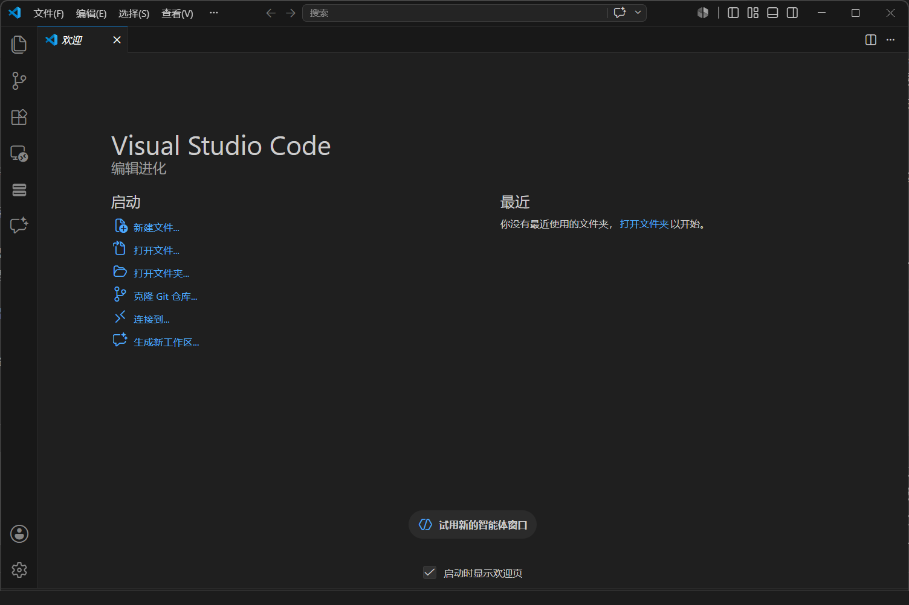
图 01：VS Code 安装后的主界面。
- 在等待安装的过程中可以去申请一个 GitHub 账号。
- 如果可以成功打开，请重启电脑，以确保 PATH 不出问题。
第 2 步：安装 Git¶
- 安装 Git：Git for Windows 下载页。
- 快速懒人链接：Git-2.55.0.3-64-bit.exe。
- 下载好之后，只需要疯狂下一步就可以了。如果有什么问题后续可以让 Agent 帮忙调整，但只要先装 VS Code 再安装 Git 问题不大。
- 安装好之后再一次重启电脑。
Agent 补充｜确认安装成功
重启后打开 PowerShell，分别运行
code --version和git --version。两条命令都能显示版本号，说明 VS Code 与 Git 已经进入 PATH。Git 官方下载页在 2026-07-20 列出的 x64 安装包版本是2.55.0.3，与上面的快速下载链接一致。
第 3 步：登录 VS Code 并安装 UCP¶
-
打开 VS Code，点击左下角的人头图标，把你的 GitHub 账号登录到 VS Code 里，这样就能打开你的设置云同步。
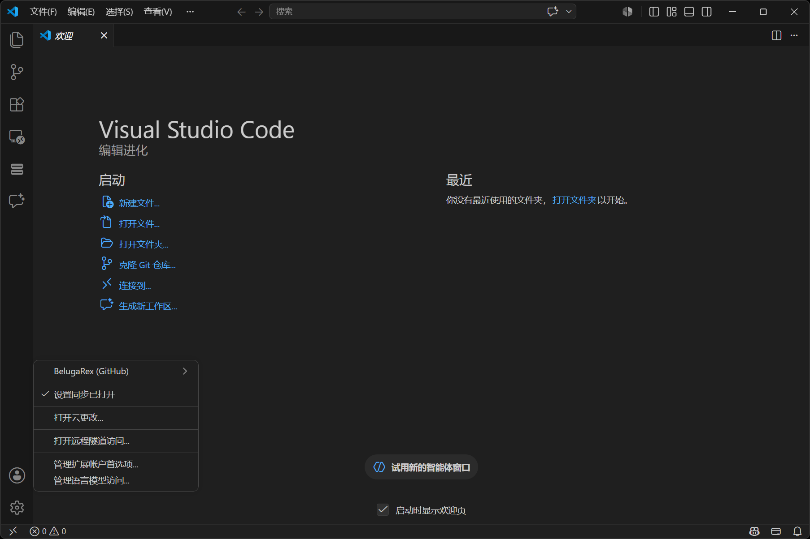
图 02：VS Code 左下角的登录入口。
-
然后安装插件，在左侧，点击扩展。
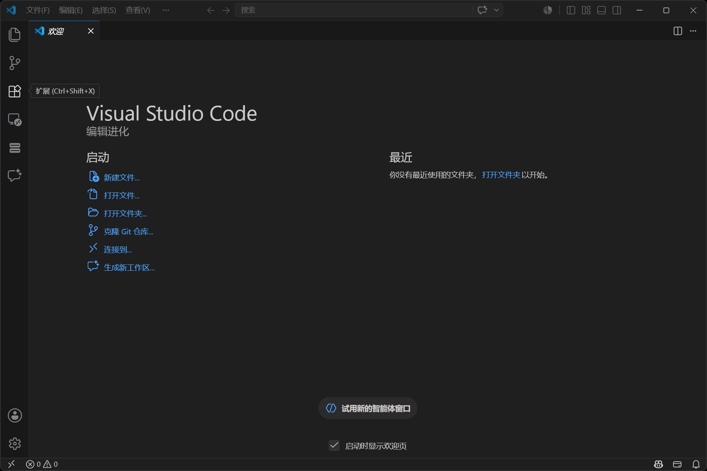
图 03：VS Code 左侧的扩展入口。
-
请先安装此插件：Unify Chat Provider，安装好之后请重启 VS Code。
图 04：Unify Chat Provider 扩展。
Agent 补充｜核对扩展来源
VS Code Marketplace 中的扩展发布者是 SmallMain，扩展 ID 是
SmallMain.vscode-unify-chat-provider。截至 2026-07-20，公开版本为7.12.3。可以在扩展市场页面和项目仓库交叉确认。
第 4 步：申请 DeepSeek API¶
- 打开 DeepSeek 开放平台。
- 点击链接之后，申请/登录你的账号，然后在页面左侧边栏进行充值，创建并复制 API Key。
请注意，DeepSeek 的 API Key 只会在你创建的那一刻显示那一次，所以如果丢失了就需要重新创建一个新的，所以建议找办法保存。
充值只需要充值 10 元就差不多了，DeepSeek 还是很耐用的。
第 5 步：在 UCP 中配置 DeepSeek¶
-
点击 VS Code 上方的输入框，输入
unify chat provider，选择内置供应商，这是 UCP 预先帮忙配置好的一些模型供应商。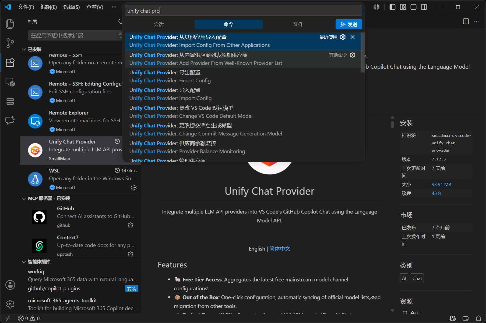
图 05：UCP 的内置供应商入口。
-
然后输入
DeepSeek就可以看到 DS 的供应商配置。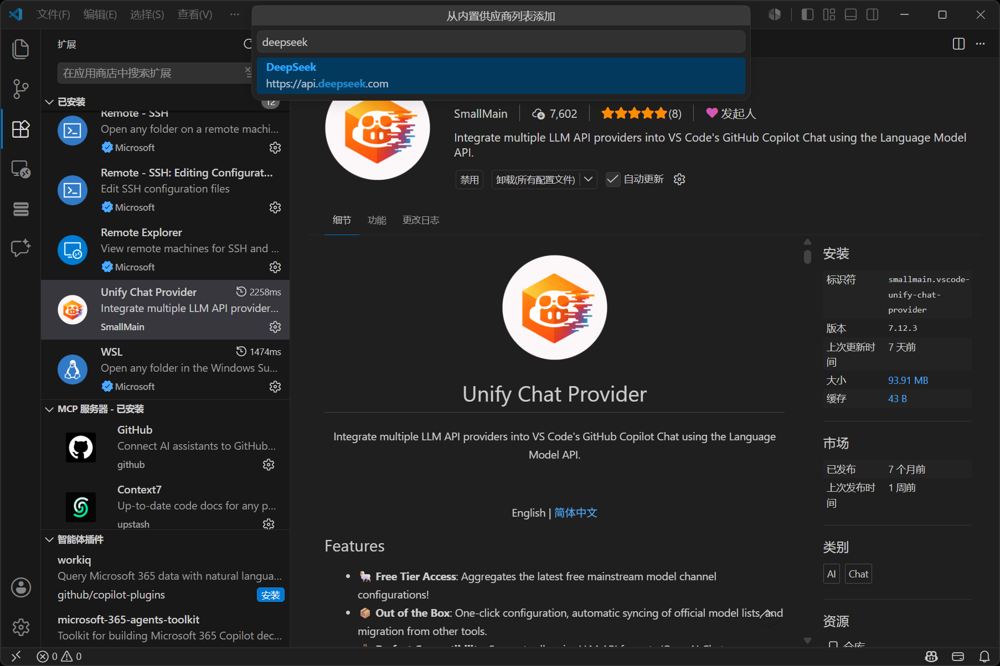
图 06：UCP 中的 DeepSeek 供应商。
-
然后就是会要求你输入供应商名字，可以保持默认的
DeepSeek，按回车。 -
然后粘贴你刚才复制的 API Key，然后再按回车。
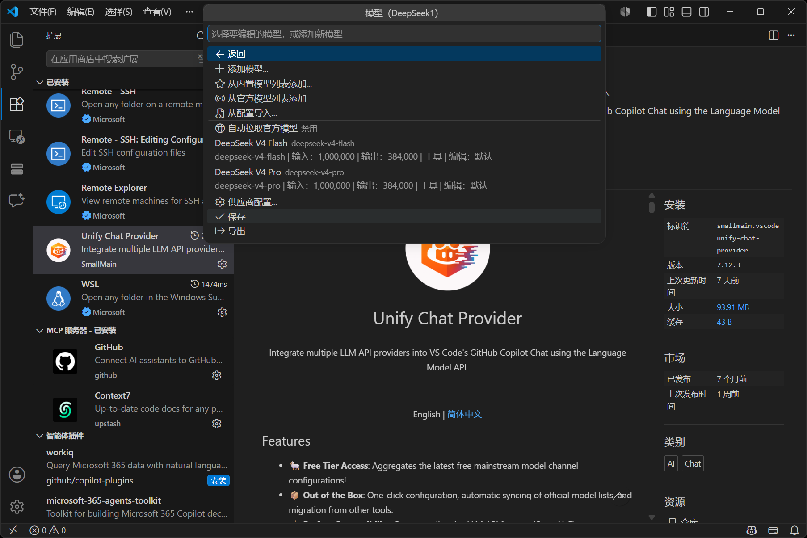
图 07：DeepSeek 供应商配置界面。
-
然后就是以下这个界面，点击 保存。
-
然后按
Esc键。 -
如果你配置正确，右下角应该会有一个银行卡的图标，把鼠标挪上去会显示余额情况。
图 08：UCP 显示的 DeepSeek 余额。
第 6 步：把三个后台模型切到 DeepSeek¶
由于 VS Code 更新之后，需要多改三个后台模型，不然它们还是会走 GitHub Copilot 订阅，会额外花钱。
-
在设置里，输入
chat.utilityModel，然后把chat.utilityModel和chat.utilitySmallModel两个模型改成 dsv4p。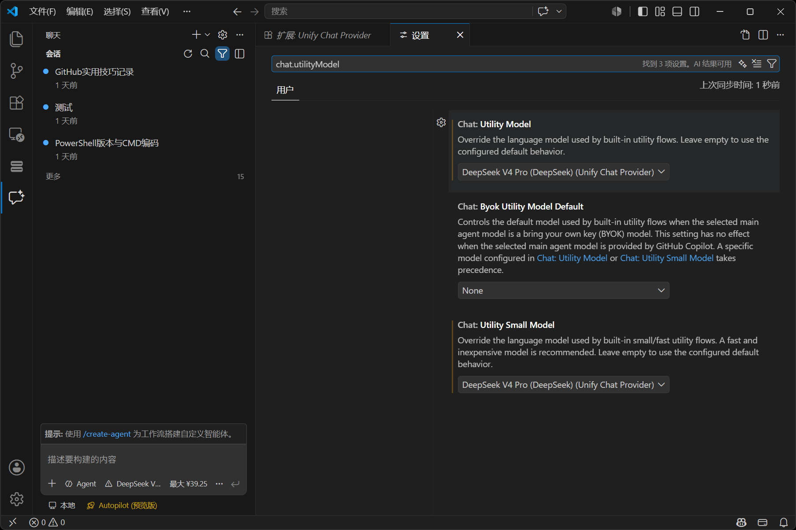
图 09：修改 Utility Model 和 Utility Small Model。
-
如果你想省钱的话，也可以在设置里输入
explore agent，然后启用代码研究子代理，然后把模型改成 dsv4p（dsv4f 也可以，更便宜更快）。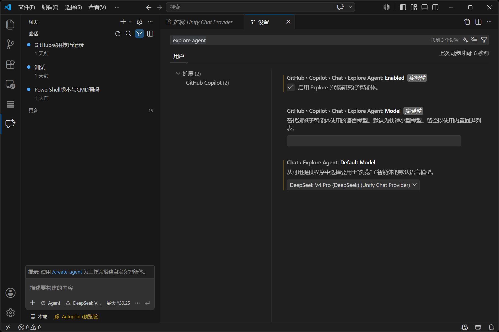
图 10：修改 Explore Agent 模型。
浏览子模型的更改可以让你在之后去买中转站模型的时候，使用那些比较贵的模型的时候，还是调用 DS 去进行代码的浏览，可以大幅省钱。
-
UCP 的开发者大佬针对这个问题提供了一个更快捷的处理方式。在主界面的顶部搜索框，搜索
Unify Chat Provider: 更改 VS Code 默认模型。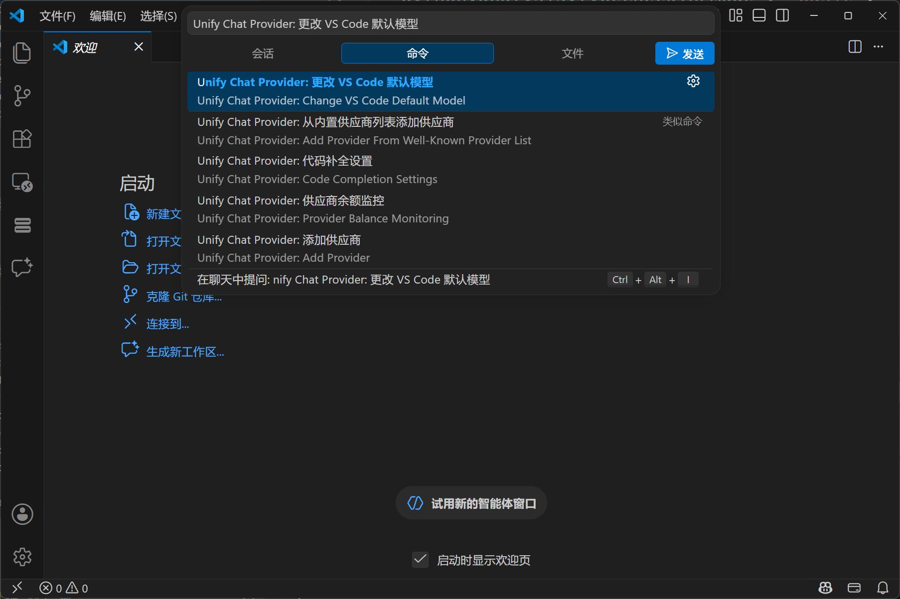
图 19：搜索 UCP 更改默认模型命令。
-
然后选择这个命令，之后会有这个列表。
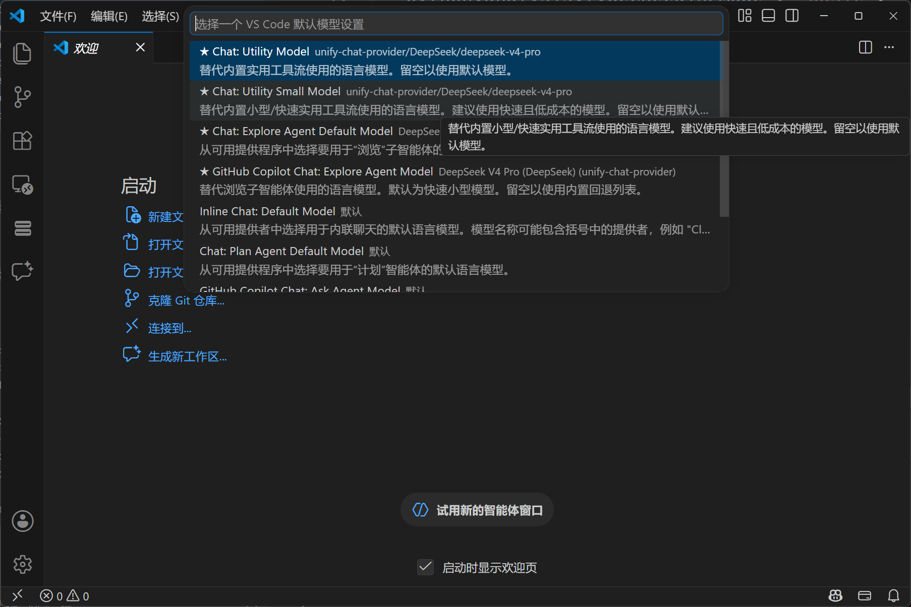
图 20：UCP 提供的三个默认模型设置。
-
滚动到最下，点击 更改所有内置实用模型，然后选择 dsv4p，请仔细观察以下图片。
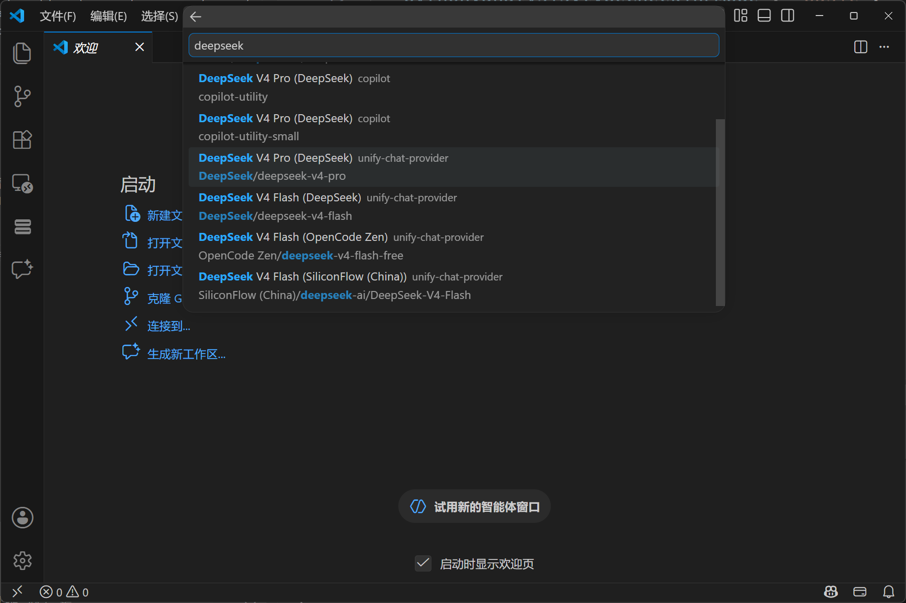
图 21：选择 UCP 接入的 DeepSeek 官方供应商模型。
你可能会和我一样有好多个 DeepSeek，因为可能是不同的供应商提供的，所以要仔细辨别。你要选的是借助 UCP 扩展接入的 DeepSeek 官方 API，获取更好的体验。
开始使用¶
-
点击上面输入框旁边的 Chat 图标，就会显示。
图 11：打开 Chat 面板。
-
你可以拖拽“聊天”这两个字到左边的边栏，就可以显示到右边（我喜欢左边）。
-
然后再聊天栏中，在底下，选择模型，可以选 DeepSeek V4 Flash 验证一下你是不是正常连接到了。
图 12：切换到 DeepSeek V4 Flash。
-
输入点什么试试看，只要 DS 回你了基本上就没什么问题了。
图 13：实际测试结果。
皮衣黄的福利：NVIDIA NIM¶
以上是内置的模型代理商的配置，我个人推荐的除了 DeepSeek，还推荐老黄的免费平台，就是比较慢。
皮衣黄的福利：NVIDIA NIM。
和 DS 只有两个模型不同，老黄有好多，但不是都很好用，所以以下是暂时的推荐（2026-07-20）：
-
前面的步骤都一样，在 UCP 的内置供应商里选择 NVIDIA，然后输入你的 API Key，按回车键。
-
接着点击 从官方模型列表添加。
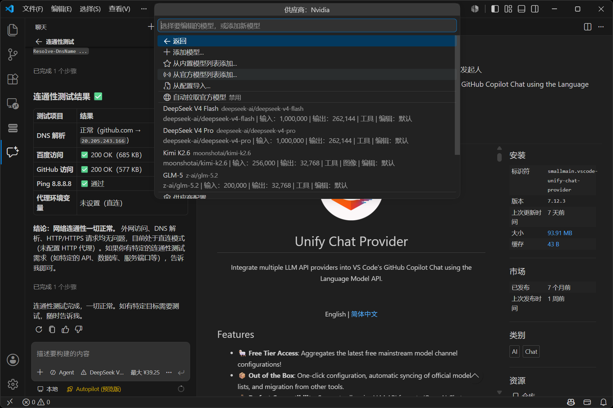
图 14：从官方模型列表添加模型。
-
然后就会有这个列表让你选择了，勾选之后点击确认，只推荐上图那几个模型。
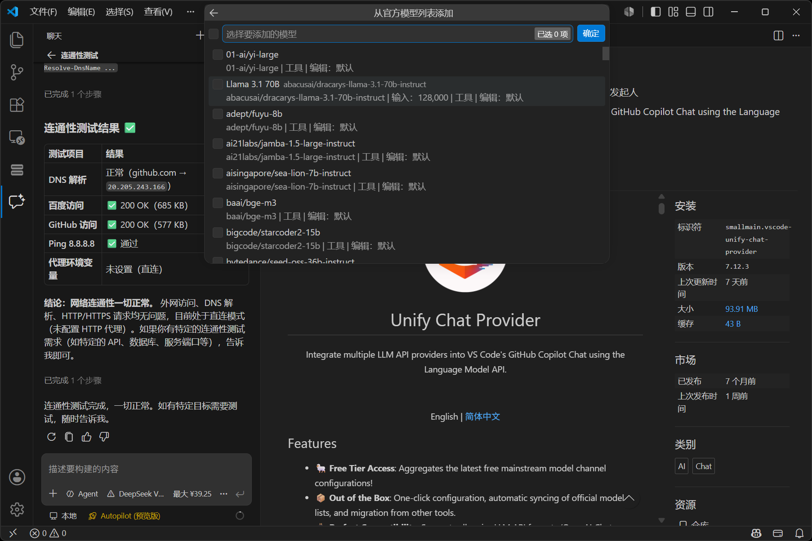
图 15：NVIDIA NIM 模型列表。
-
老黄的 NIM 还需要改动供应商配置，点击 供应商配置。
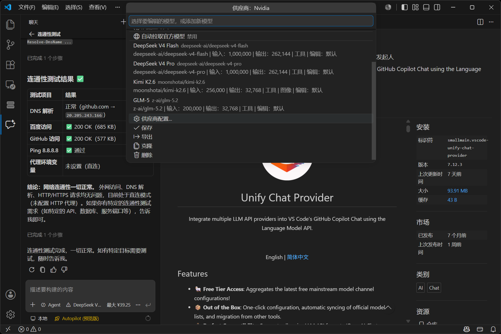
图 16：打开 NVIDIA 供应商配置。
-
选择 网络设置。
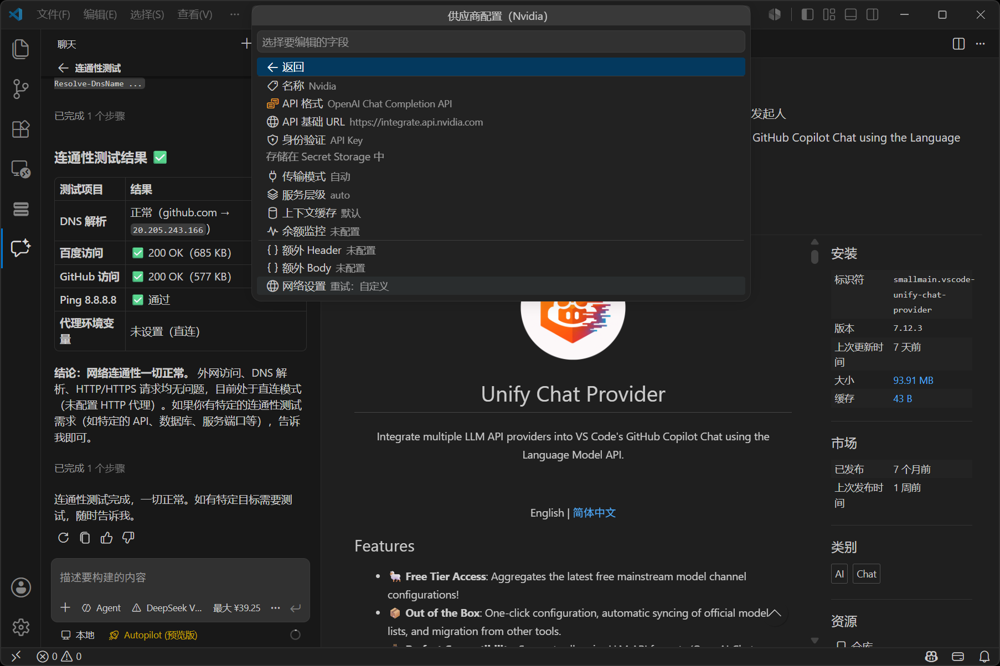
图 17：打开网络设置。
-
按照下图的设置，修改 连接超时、响应超时、最大重试次数，然后点击 返回 到供应商配置，点击 返回 到供应商页面，然后点击 保存，然后就可以按
Esc，开始薅老黄羊毛。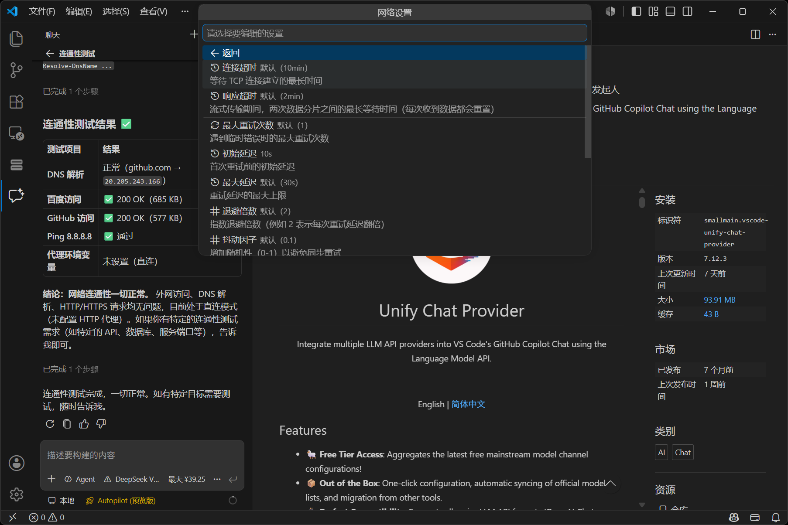
图 18：调整连接超时、响应超时和最大重试次数。
Agent 补充｜时效提醒
Git 安装包、UCP 版本、DeepSeek 模型和 NVIDIA NIM 模型列表都可能更新。本页外部入口最后核验于 2026-07-20；如果界面名称变化，可以优先按页面中的关键词搜索。